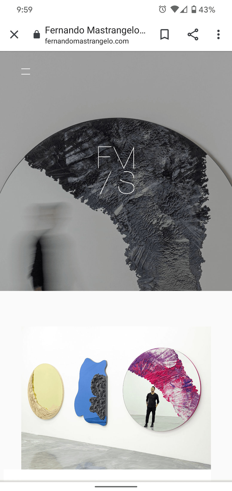

White Space and Clean Design
Phoenix Art Museum
phxart.org/
Phoenix art Museum's homepage on mobile is a great example of a clean design and great white space. Often when moving from a desktop site to the mobile, there is a loss of clarity. However, by using the same elements and cropping them down, adding a white canvas background and simplifying the message, Phoenix Art Museum smoothly transitions the site to a mobile format.
Rule of Thirds
Asian Art Museum
asianart.org
The Asian art museum amplifies what the rule of thirds should look like. They used not only an image using the rule, but they laid out their mobile site by practicing it. The first third being the header and image, followed by the text stating when they are reopening and lastly their other online exhibits.
Contrast
Fernando Mastargelo's Studio
fernandomastrangelo.com Fernando Mastargelo uses stark contrast on the homepage of his studio. The black-and-white image, followed by white space and a colored image of his bright art is an excellent example of how contrast is pleasing to the eye. This principle when displayed professionally can draw viewers to the site because of its impressionability.